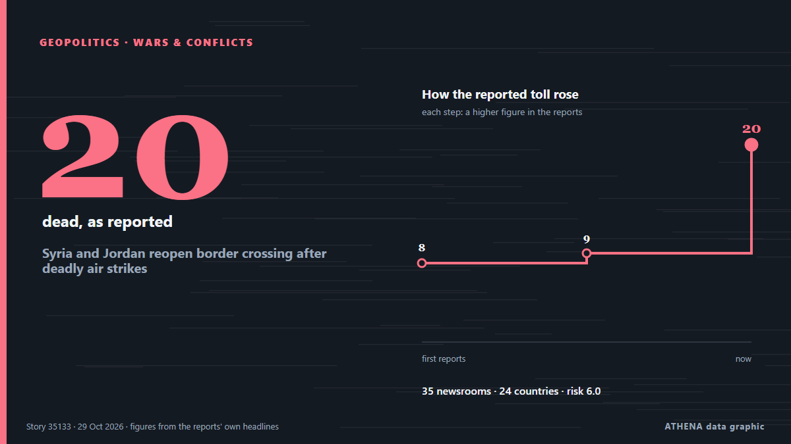

Syria and Jordan reopen border crossing after deadly air strikes

Jordanian armed forces carried out strikes on "militant hideouts" in Syria that it said were linked to a deadly church attack on the kingdom last week. من DW English
نشرته بشكل مستقل 35 مصدرًا في 24 دولة منذ 26 أكتوبر، وأول من نشره DW English؛ والتغطية تتراجع. يقدّر ATHENA الخطر بأنه مرتفع (6.0/10)، ويعود ذلك أساسًا إلى خطورة الضرر الموصوف ونطاقه الجغرافي والقطاعي. الثقة 90٪ (مرتفعة)، وعدد المصادر المستقلة المؤكِّدة: 35، بمتوسط موثوقية للمصادر يبلغ 77٪. من نقل الخبر: 4 وسائل إعلام في تركيا · Turkey, 4 وسائل إعلام في العراق · Iraq, 4 وسائل إعلام في الإمارات العربية المتحدة · United Arab Emirates. امتدت التغطية من 26 أكتوبر إلى 27 أكتوبر، على مدى 23 ساعة.
لماذا يهم: قد تغيّر التطورات الأمنية والدبلوماسية التحالفات والتجارة والأسواق إلى ما هو أبعد بكثير من الدول المعنية مباشرة.
ما الذي تغيّر: 2 تقارير جديدة من 2 غرف أخبار خلال 24 ساعة حتى 29 أكتوبر.
العنوان الأول: Jordan strikes groups in Syria after church attack
تُعرض العناوين بالإنجليزية كما نُشرت.
نظرة سريعة
اختير وقُيِّم وكُتب وفق منهجية ATHENA المنشورة. لا يتدخل أي محرر في الأحداث بعينها. كيف يُنتَج ›
| 26 Oct 10:12 UTC | 1 |
|---|---|
| 26 Oct 13:12 UTC | 0 |
| 26 Oct 16:12 UTC | 0 |
| 26 Oct 19:12 UTC | 12 |
| 26 Oct 22:12 UTC | 9 |
| 27 Oct 01:12 UTC | 9 |
| 27 Oct 04:12 UTC | 5 |
| 27 Oct 07:12 UTC | 12 |
| 27 Oct 10:12 UTC | 8 |
| 27 Oct 13:12 UTC | 3 |
| 27 Oct 16:12 UTC | 0 |
| 27 Oct 19:12 UTC | 6 |
| 27 Oct 22:12 UTC | 3 |
| 28 Oct 01:12 UTC | 2 |
| 28 Oct 04:12 UTC | 5 |
| 28 Oct 07:12 UTC | 1 |
| 28 Oct 10:12 UTC | 2 |
| 28 Oct 13:12 UTC | 1 |
| 28 Oct 16:12 UTC | 0 |
| 28 Oct 19:12 UTC | 0 |
| 28 Oct 22:12 UTC | 0 |
| 29 Oct 01:12 UTC | 0 |
| 29 Oct 04:12 UTC | 0 |
| 29 Oct 07:12 UTC | 0 |
| 29 Oct 10:12 UTC | 1 |
| 26 Oct 19:50 UTC | 1.3 |
|---|---|
| 26 Oct 20:31 UTC | 3.1 |
| 26 Oct 20:34 UTC | 4.2 |
| 26 Oct 21:00 UTC | 5.5 |
| 27 Oct 06:29 UTC | 5.8 |
| 27 Oct 06:34 UTC | 6.4 |
| 27 Oct 15:21 UTC | 6.3 |
| 29 Oct 12:43 UTC | 6.0 |
لماذا هذه الأرقام
الأهمية
الخطر
الثقة
التغطية — من نشر الخبر ومتى
العنوان كما نُشر · يفتح الأصل- DW English · ألمانيا · GermanyJordan says its military struck 'militant hideouts' in Syria after deadly church attack
- Al-Monitor · الولايات المتحدة · United StatesJordan strikes southern Syria after linking church attackers to 'terrorist groups'
- The Jerusalem Post · إسرائيل · IsraelJordan strikes southern Syria after linking church attackers to 'terrorist groups'
- Arab News · المملكة العربية السعودية · Saudi ArabiaJordan strikes southern Syria after church funeral attack; Damascus says 8 civilians killed
- Türkiye Today · تركيا · TurkeyJordan launches airstrikes in Syria after church attack kills 9
- Anadolu Agency (English) · تركيا · TurkeyJordanian airstrikes kill 5 civilians, injure 2 in southern Syria
- Shafaq News (English) · العراق · IraqSyria denies coordination with Jordan over deadly airstrikes
- Haaretz (English) · إسرائيل · IsraelJordan strikes kill five in southern Syria following deadly church attack
- The Straits Times · سنغافورة · SingaporeJordan says its air force struck ‘militant hideouts’ in Syria after church attack
- The Guardian · المملكة المتحدة · United KingdomJordan attacks militants in Syria in retaliation for church attack
- The New Arab · INTJordan strikes groups in Syria after church attack
- Anadolu Agency (English) · تركيا · TurkeySyria closes border crossing with Jordan to passengers, trade
- Hespress English · المغرب · MoroccoSyria shuts main border crossing Tuesday with Jordan after strikes
- Gulf News · الإمارات العربية المتحدة · United Arab EmiratesJordan strikes militant groups in Syria after church attack
- Anadolu Agency (English) · تركيا · TurkeySyria objects to Jordanian airstrikes carried out without prior coordination
- Al Jazeera English · قطر · QatarJordan attacks Syria in response to Karak church attack
- Al Jazeera English · قطر · QatarJordan strikes Syria after church attack, killing at least seven people
- TASS (English) · روسيا · RussiaJordanian airstrikes kill five civilians in southern Syria, officials say
- TASS (English) · روسيا · RussiaSyria closes border crossing with Jordan after airstrikes
- Al-Monitor · الولايات المتحدة · United StatesJordan strikes militant groups in Syria after church attack
- Free Malaysia Today · ماليزيا · MalaysiaJordan strikes militant groups in Syria after church attack
- Times of India · الهند · India7 civilians killed in Jordan strike on Syrian militants in retaliation to church attack
- The National · الإمارات العربية المتحدة · United Arab EmiratesJordan says 20 ISIS militants killed in air strikes on Syria
- Xinhua (English) — page reader · الصين · ChinaJordan launches airstrikes on S. Syria, says hit militants behind deadly church attack
- BBC News · المملكة المتحدة · United KingdomJordan carries out deadly strike in Syria in retaliation for church attack
- APA (English) · أذربيجان · AzerbaijanSyria closes border crossing with Jordan
- The National · الإمارات العربية المتحدة · United Arab EmiratesJordan’s unity remains its strongest defence
- Xinhua (English) — page reader · الصين · China7 killed in Jordanian airstrikes on S. Syria amid coordination dispute
- FBC News · فيجي · FijiJordan says its air force struck ‘militant hideouts’ in Syria after church attack
- Kurdistan24 (English) · العراق · IraqSyria Closes Nassib Border Crossing With Jordan
- Asharq Al-Awsat (English) · المملكة العربية السعودية · Saudi ArabiaSyria Condemns Jordan Strikes that Kill at Least 6
- News of Bahrain · البحرين · BahrainJordan Strikes Southern Syria After Deadly Church Attack
- Kurdistan24 (English) · العراق · IraqFour Days From Strategic Partnership To Airstrikes: The Syria-Jordan Crisis Timeline
- Egypt Independent · مصر · EgyptSyria closes Nasib border crossing with Jordan, suspends passenger travel and trade
- The National · الإمارات العربية المتحدة · United Arab EmiratesIsrael votes in crucial election, Jordan retaliates in Syria and Harry Kane wins Ballon d'Or
- The New York Times (World) · الولايات المتحدة · United StatesJordan Says Its Deadly Strikes in Syria Targeted Islamic State
- News of Bahrain · البحرين · BahrainSyria Shuts Main Border Crossing With Jordan Following Airstrikes
- Kurdistan24 (English) · العراق · IraqJordan Says Syria Strikes Targeted ISIS, Killed 20 Militants
- Business Recorder · باكستان · PakistanJordan says its strikes on Syria killed more then 20 Islamic State militants
- Arab News · المملكة العربية السعودية · Saudi ArabiaJordan says its strikes on Syria killed more than 20 Daesh militants